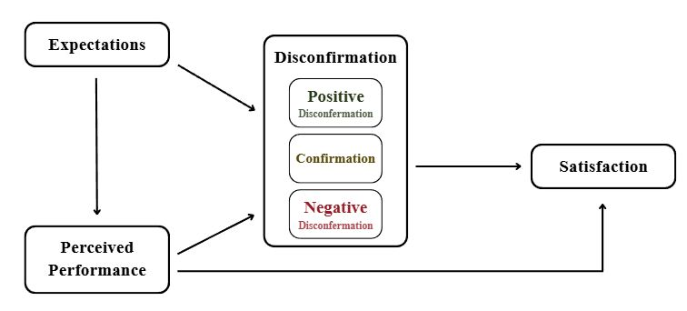
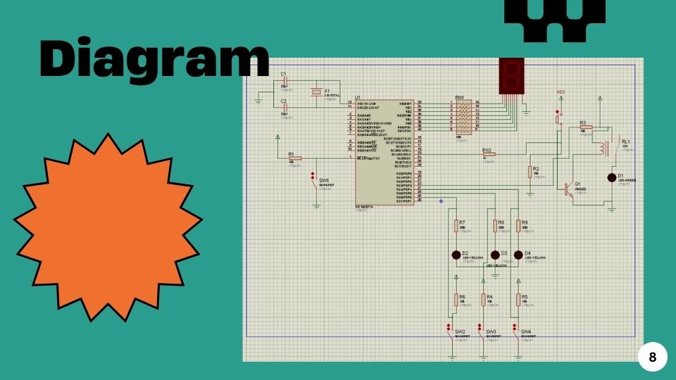

ผลงาน
โครงงานที่เคยมีส่วนร่วมในการพัฒนา
โครงงานที่ผ่านมา

ระบบตรวจนับจำนวนบุคคลและควบคุมแสงสว่างอัตโนมัติ
ระบบตรวจนับจำนวนบุคคลและควบคุมแสงสว่างอัตโนมัติ โดยใช้ไมโครคอนโทรลเลอร์ PIC16F877A
- MPLAB
- PROTEUS
โปรแกรมวิเคราะห์ข้อมูลเซ็นเซอร์
สคริปต์อ่านข้อมูลอุณหภูมิจากเซ็นเซอร์ แล้วสรุปเป็นกราฟรายวัน ใช้ในวิชาโครงงาน
- Python
- Matplotlib